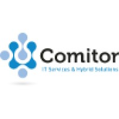
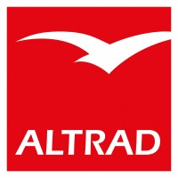
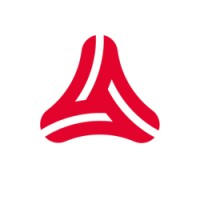
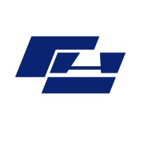
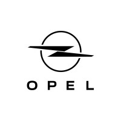

Professional Experience
Professionele Ervaring
25+ years of experience in Technical Support, Systems Engineering, Infrastructure Management and Customer-Focused IT Services.
Meer dan 25 jaar ervaring in Technical Support, Systems Engineering, Infrastructuurbeheer en Klantgerichte IT-diensten.
Download CV (PDF) Download CV (PDF)
Technical Support Engineer
Responsible for the maintenance and management of company servers, as well as the management of customers internal network infrastructure, including resolving remote issues and providing technical support. Involved in the implementation of new IT systems and software upgrades and conducting audits of new customers to collect necessary information.
Verantwoordelijk voor het onderhoud en beheer van bedrijfsservers, evenals het beheer van de interne netwerkinfrastructuur van klanten, inclusief het oplossen van problemen op afstand en het bieden van technische ondersteuning. Betrokken bij de implementatie van nieuwe IT-systemen en software-upgrades en het uitvoeren van audits bij nieuwe klanten om de nodige informatie te verzamelen.
ICT System Engineer Clinical Applications
ICT System Engineer Klinische Applicaties
Responsible for installation procedures, monitoring the change & release process, resolving user errors and providing technical support to end users, with a focus on the technical use of the applications and close collaboration with colleagues within the ICT group.
Verantwoordelijk voor installatieprocedures, het monitoren van het change- en releaseproces, het oplossen van gebruikersfouten en het bieden van technische ondersteuning aan eindgebruikers, met een focus op het technisch gebruik van applicaties en nauwe samenwerking met collega’s binnen de ICT-groep.

Support & System Engineer
Supporting internal users in various ways, including remote assistance, telephone assistance and personal on-site support. Ensure the management of servers and take responsibility for troubleshooting both software and hardware issues, as well as installations if necessary.
Ondersteunen van interne gebruikers op verschillende manieren, waaronder ondersteuning op afstand, telefonische ondersteuning en persoonlijke ondersteuning ter plaatse. Zorg dragen voor het beheer van servers en verantwoordelijkheid nemen voor het oplossen van zowel software- als hardware problemen, evenals installaties indien nodig.

Support & System Engineer
Extensive support to end users for both software and hardware problems, managing servers, working proactively and structured with a flexible, helpful and driven approach.
Uitgebreide ondersteuning bieden aan eindgebruikers voor zowel software- als hardware problemen, servers beheren en proactief en gestructureerd werken met een flexibele, behulpzame en gedreven aanpak.

Support Engineer
Providing technical support to internal users through remote assistance, telephone assistance and helpdesk support to resolve various questions and problems.
Technische ondersteuning bieden aan interne gebruikers via remote assistentie, telefonische ondersteuning en helpdeskondersteuning om diverse vragen en problemen op te lossen.

Support & System Engineer / Ad hoc IT Manager
Support & System Engineer / Ad hoc IT Manager
Managing a team of 4 IT employees after the IT manager was fired. My tasks include purchasing IT equipment, participating in meetings, coordinating/carrying out internal moves, managing and executing internal projects, updating and managing servers and providing technical support to internal users through various communication channels, including with the aim of keeping the infrastructure up to date.
Aansturen van een team van 4 IT-medewerkers na het ontslag van de IT-manager. Mijn taken omvatten de aankoop van IT-apparatuur, deelname aan vergaderingen, het coördineren/uitvoeren van interne verhuizingen, het beheren en uitvoeren van interne projecten, het updaten en beheren van servers en het bieden van technische ondersteuning aan interne gebruikers via verschillende communicatiekanalen, met als doel de infrastructuur up-to-date te houden.

Administrative Employee & IT Support for HRM Division
Administratief Medewerker & IT Support HRM
Fulfilling the role of administrative assistant and IT support for the HRM department.
Vervullen van de rol van administratief medewerker en IT-ondersteuning voor de HRM-afdeling.